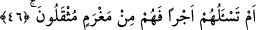

45. Onlara mühlet veriyorum. Doğrusu benim fendim çok sağlamdır!
“Onlara mühlet veriyorum.” Yâni ben onların ömürlerini uzatarak, ecellerini geriye
bırakarak onlara mühlet veriyorum ki, bununla kendilerine hayır ve iyilik murâd
edildiğini zannederek daha çok günah kazansınlar. “Doğrusu benim fendim” yâni onları
azapla yakalayıvermem “çok sağlamdır.” Çok şiddetlidir. Buna asla dayanılamaz ve
hiçbir şeyle savuşturulamaz.
Doğrusu benim cezâm/azâbım çok muhkem/metindir, hiçbir şey onu uzaklaştıramaz.
Yine benim yakalamam çok kuvvetli/çetindir, kimse ona tâkat getiremez.
Keşşaf tefsirinde şöyle bir açıklama görüyoruz; Allah ihsanını ve insanlara fırsat
vermesini, yukarda istidrâc şeklinde isimlendirdiği gibi, “keyd” olarak da
isimlendirmektedir. Nimete ve mühlete “keyd” denmesi bunların, hile ve tedbir şeklinde
olmasından dolayıdır. Çünkü verilen bu nimet ve mühlet sonuç olarak kişinin helâke
yuvarlanmasına sebep oluyor. Böyle bir tuzağın “sağlam” şeklinde nitelenmesi, Allah
Teâlâ’nın ihsânının helâke sebep olmaktaki etkisinin gücünden dolayıdır.
Âlimlerden birisi şöyle der: “Keyd”, kendisine tuzak kurulan kişi için faydalı olan
şeyin açığa çıkarılması, zararlı olanın da gizlenmesi demektir.
Müfredat’ta açıklandığına göre “keyd” bir çeşit hîledir. Keydin iyisi de, kötüsü de
vardır. Kelimenin kötü anlamda kullanılması daha yaygındır. İstidrâc ile mekr de
böyledirler. Keyd kelimesinin iyi anlamda kullanılmasına şu missal verilebilir: “İşte
biz Yusuf’a böyle bir tedbir öğrettik (kidnâ); yoksa kralın kanununa göre kardeşini
tutamayacaktı.” (Yusuf, 12/76) Bâzı âlimler “keyd” kelimesi ile azâbın kasdedildiğini
söylemişlerse de doğru olanı; keyd’in, “sonu azâb olan mühlet verme” anlamında
olduğudur.
Ta’rifât adlı eserde bu kelime târif edilirken şöyle deniyor: Keyd, bir başkasına
gizlice zarar verme isteğidir. Bu, insanlar tarafından yapılırsa “kötü hile” adını alırken
Allah tarafından yapıldığında ise, insanların amellerine karşılık vermek için haklı bir
tedbirdir.
46. Yoksa sen onlardan bir ücret istiyorsun da bu yüzden onlar ağır bir borç
altında mı kalıyorlar?
“Yoksa sen onlardan” dünyaya âid tebliğ, irşâd, dâvet, îman ve ibâdet konusunda
“bir ücret istiyorsun da” bunun için “onlar ağır bir borç altında mı kalıyorlar?”
Bu âyet-i kerîme yukarda “em lehum şurekâ” diye başlayan kırk birinci âyetin üzerine
mâtuftur. Âyetin mânâsına gelince; “sen onlardan mâlî bir külfet istiyorsun da bu yüzden
onlar ağır bir borç altında mı kalıyorlar?” demektir.
Borç şeklinde tercüme edilen “mağram” kelimesi ile “kasdedilen mâli bir